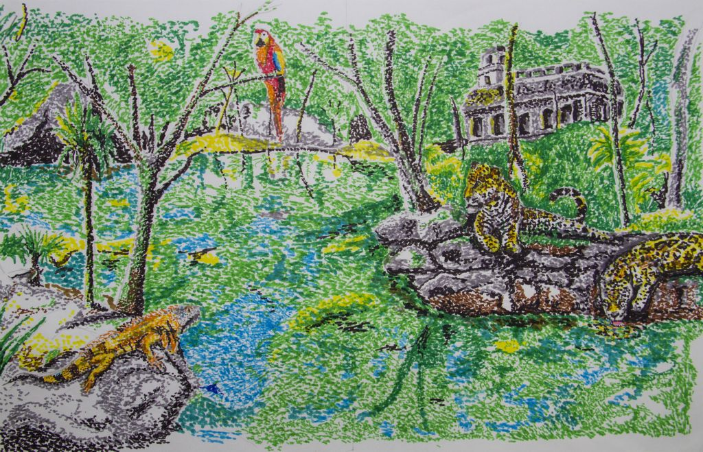
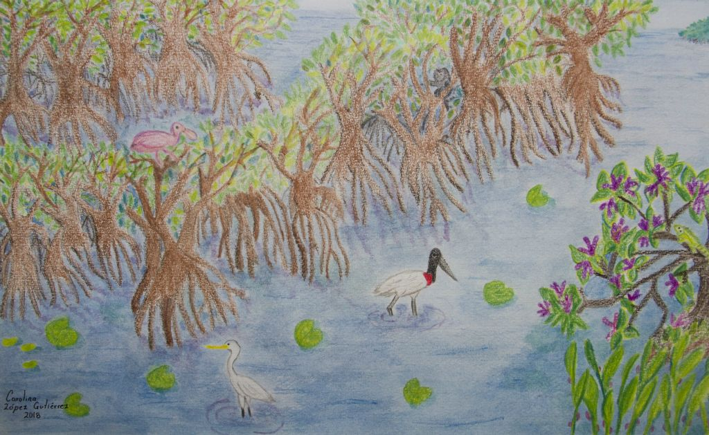
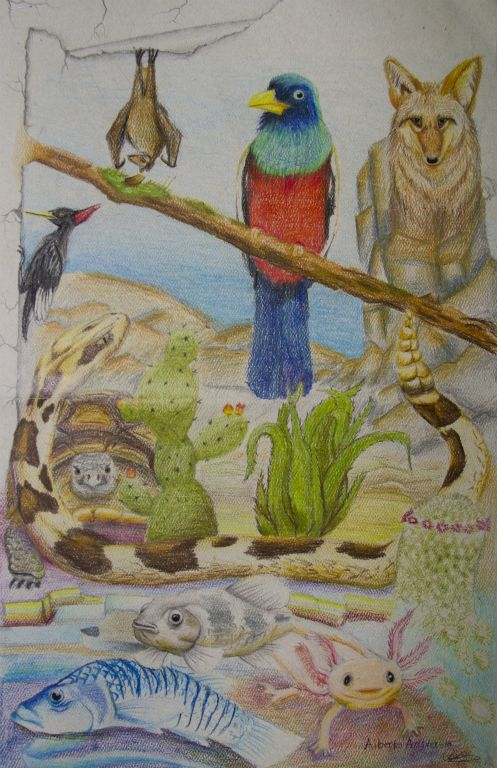
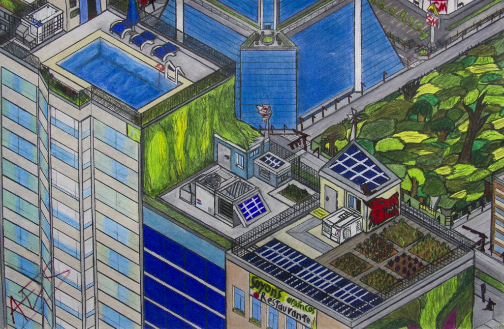
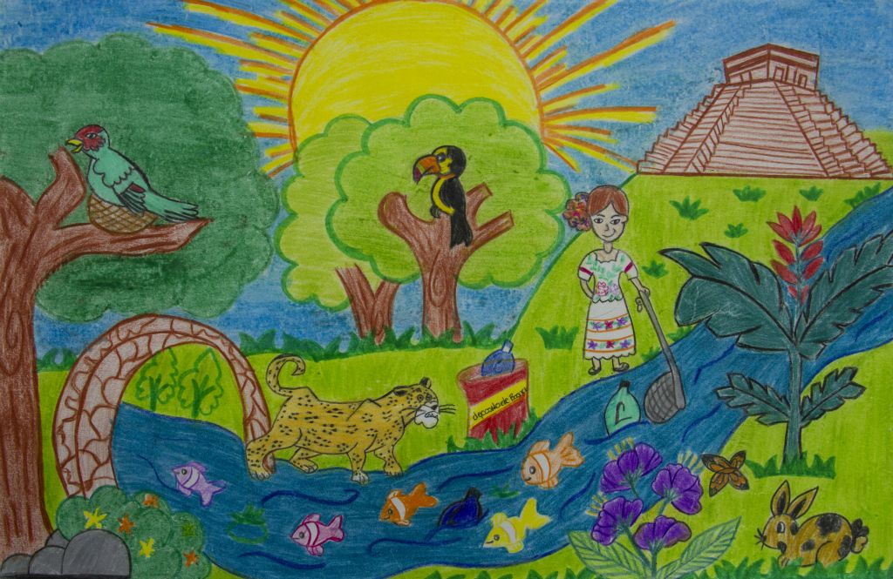
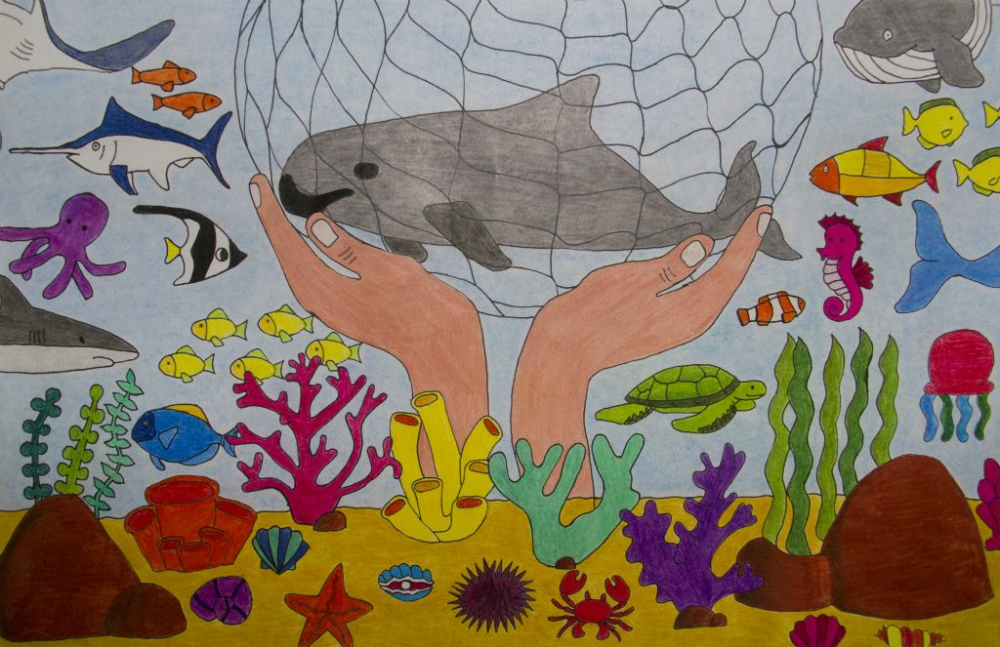

En paz con mi naturaleza Jesús Eduardo Hernández Torres - 14 años - Tlaxcala
El riñón del planeta Carolina López Gutiérrez -13 años - Tabasco
Sólo mexicanos Alberto Acosta Segoviano - 15 años - Oaxaca
Orgullosos hijos de México Anette Córdova Ramírez - 14 años - CDMX
Te estoy sosteniendo Karen Daniela Chiquete Martínez - 14 años - Sinaloa
Animal Legendario Ángel Santiago Arenas Flores - 14 años - CDMX
Fantasma de paz Ana Sofía Viñas Herrera - 15 años - Estado de México
¿Y si volvemos atrás? Estéban Barajas Adame - 14 años - Michoacán
Utopía del mañana urbano Adrián Espino Serrano - 15 años - Querétaro
Bellezas de mi México Quetzalli Vega Hernández - 13 años - Guanjuato
Guardianes de México Rosamaría Vanessa Zepeda Rosas - 14 años - CDMX
The Axolotl Carolina Herrera Arzate - 14 años - Estado de México
Mi mamá me enseñó Sarahí Rodríguez Alemán- 13 años - Michoacán
Que la naturaleza no se acabe Elena Guadalupe Gómez Jiménez - 15 años - Jalisco
También somos mexicanos Sureymi Suraydai Puc Ay - 15 años - Yucatán
Salvemos a la vaquita marina ¡Aún hay esperanzas! Jahayra Guadalupe Ojeda Jiménez - 15 años - Baja California Sur
Sabor a México Alondra Leilany Delgado Carmona - 15 años - Zacatecas
Solitario Jimena Montserrat Villegas Romero - 13 años - Estado de México
Un árbol llamado México Mariana Franco Garzón - 14 años - Jalisco
Los ecosistemas donde vivo Berenice Gómez García - 14 años - Campeche
Capilla de Santiago Ignacio José Victoriano Castro Gómez - 14 años - Chihuahua